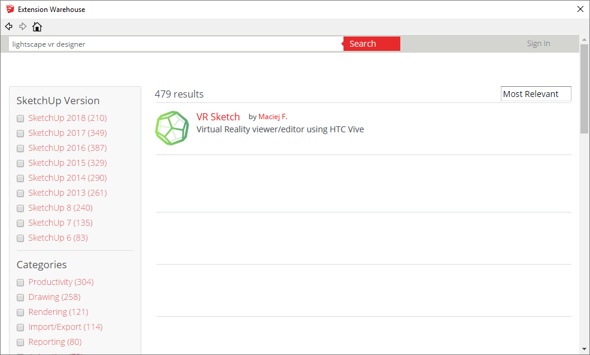
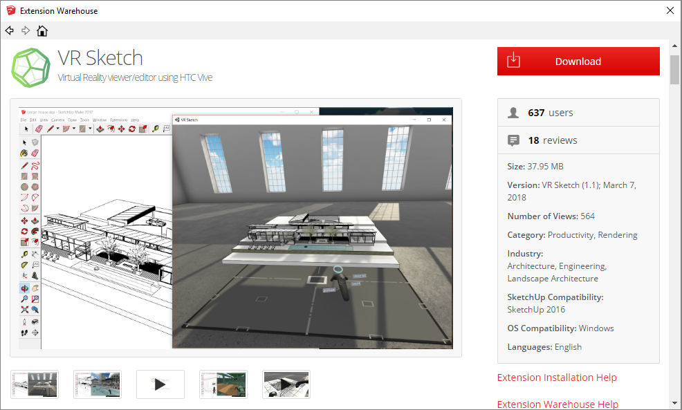
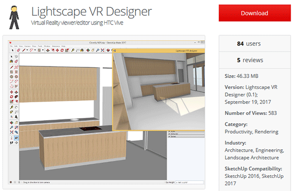
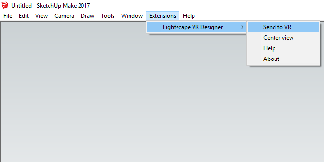
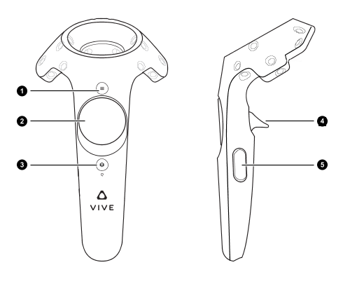

Documentation
Lightscape VR is a SketchUp extension that allows anyone to use SketchUp from inside virtual reality.
It is avalible in 3 different versions:
- Viewer: View and present any SketchUp model in VR.
- Trial: All the features as the pro version but limited to a trial period.
- Pro: Draw and edit any SketchUp model in VR.
Requirements
- Headset: HTC Vive with SteamVR. In the future we plan to support other headsets like the Oculus Rift.
- Software: Only SketchUp for now, planned support for revit, rhino etc.
- OS: Only works on windows for now, due to restrictions with HTC Vive.
Download
You can either download and automatically install the SketchUp extension from inside SketchUp or manually download it from their website.
From inside Sketchup
- Open Sketchup.
- In the top menu bar click "Window" then select "Extension Warehouse" from the drop-down list. This
should open a new Extension Warehouse window.

- In the search bar at the top, search for "lightscape vr designer" or "lightscape" or just "vr".

- From the search results select "Lightscape VR Designer". 
- Click the red "Download" button in the top right. 
- If requested, sign in with your username and password, or follow their prompts to register first.
- Then click the red "Install" button in the top right.
- SketchUp will ask permission to install the extension. Select "Yes". *
- Wait for SketchUp to download and install the extension.
* Lightscape VR Designer only requires access to your filesystem in order to access SteamVR and the Vive.
From your web browser
- You can download the SketchUp extension from the Extension Warehouse.
- Click the "Download" button. 
- If requested, sign in with your username and password.Then click the "Download" button again.
- Select where your download will be saved to.
- Proceed to the instillation instructions below.
Install
These instructions are for if you downloaded the extension from your web browser. If you downloaded the extension from inside SketchUp it should be autoamtically installed.
- For the official SketchUp installation instrctions visit the SketchUp Help Center.
- Open Sketchup.
- In the top menu bar click "Window" then select "Extension Manager" from the drop-down list. This
should open a new Extension Warehouse window.

- Click the red "Install Extansion" button in the bottom left.

- In the new window, navigate to where you downloaded the extention file (baroquesoftware_lightscape_vr_designer.rbz),
then click "OK".

- SketchUp will ask permission to install the extension. Select "Yes". *
* Lightscape VR Designer only requires access to your filesystem in order to access SteamVR and the Vive.
Run
The menu "Extensions" -> "Lightscape VR Designer" -> "Send to VR" sends your currently-opened SketchUp model to the VR headset.
In the default installation, this operation also starts a new window that mirrors the VR headset. If you then look in the VR headset, you should see a small version of your model.
Working in VR
Both Vive controllers are used and they are interchangeable.
Controls
- 1. Menu button
- 2. Touchpad
- 3. Steam home button
- 4. Trigger
- 5. Grip
Modes
- View
- Edit
SketchUp controls
- Center view
- Position VR viewer
Editing
Tools
- Select
- Line
- Rectangle
- Push-pull
- etc...
Settings
In two-persons settings, you can look at the SketchUp model on the computer while the other person is in the VR headset. His location is visible in the SketchUp model as the "Beret Guy"---as long as the "VR teleport" tool is selected (it is initially selected). An infinite blinking line extends vertically, to help locate him in very large models. You can also teleport Beret Guy (and the person in the VR) to a new location simply by clicking on the model. Note that this makes the whole setup usable even in minimal situations where the person in the headset is not given any controller.
The "Copy VR location" button (or "Center view" menu item) do the opposite synchronization: when clicked, it changes the SketchUp camera to match the current VR headset location. Changes to the SketchUp model should be immediately visible in the VR headset. If they are not (likely because of a bug), you need to reselect "Send to VR", which sends the whole model from scratch.
Problems
Reporting bugs
Please report any other rendering bug to the issue tracker or by writing to the e-mail below.
Known issues
In large models, it takes a few seconds before the in-VR teleport starts working.
Only planar faces, with or without texture, are rendered. This excludes floating edges and more advanced SketchUp constructs like "Images", construction lines, text labels, and so on. Also, the "smooth" edge option is not supported yet: it is rendered as a regular hard edge.
We could improve the way the teleport picks its destination in case the beam touches a wall or ceiling. Also, there is a light source that follows the player after a teleport, but it is always positioned at the center of the play area, which might be behind a wall.
Textures may very occasionally appear badly positioned when you open a subgroup. This is because textures can be either positioned or non-positioned (right-click, Texture, "Reset Position" makes it non-positioned). However, non-positioned textures are reported at a bogus position by SketchUp's Ruby API when editing inside groups or components. We work around that by computing what the Ruby API gives us in this case. If we get that, then we assume that it was a non- positioned texture that is misreported, and fix it manually. This might occasionally be fooled if it was actually a *positioned* texture that is exactly at the same position.
Contact
We hope you enjoy it!
Feel free to give us feedback by writing to fijal@baroquesoftware.com.
The Baroque Software team